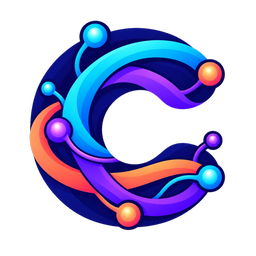

1. Первый запуск: машин нет

Connect to your machine
This phone works with projects on a computer running the desktop app. Nothing runs on the phone itself.
- 1On the computer, open Settings, then Remote access.
- 2Turn on Allow remote access. It shows a QR code.
- 3Scan it here and confirm on the computer.
Локальной машины нет, поэтому вместо Home приложение открывается здесь. Других действий нет.
2. Сканирование QR
Камера нужна только на этом экране. Если разрешение не дано, остаётся ввод кода вида 7KQ2-M9XD.
3. Сверка и подтверждение на компьютере
Both sides show a fingerprint. Continue only if they are exactly the same.
4F2A 91C7 D03E4F2A 91C7 D03EПоследнее слово за компьютером: пока там не нажато Allow, телефон ничего не получает. Отпечаток виден на обоих экранах.
4. Home после подключения
Тот же Home, что в десктопе. Отличия: нет полосы вкладок и кнопок окна, строки и кнопки выше под палец.
5. Меню (боковая панель)
Та же боковая панель десктопа, выезжает поверх страницы. Сверху машина и состояние связи. Add project выбирает папку на удалённой машине.
6. Выбор машины
Одна машина за раз, как в десктопе; Inbox и Archive собирают все. Пункта «This machine» нет. Видно, прямое соединение или через relay.
7. Вопрос в задаче
Plan r2 locks the rotation, adds a version column and covers it with a concurrency test.
Та же карточка вопроса. Варианты во всю ширину, высота строки 48 px. Назад возвращает туда, откуда пришли. Подсказок клавиш нет.
8. Связь потеряна
Plan r2 locks the rotation, adds a version column and covers it with a concurrency test.
Последнее известное состояние остаётся на экране с временем. Действия выключены с причиной; ничего не ставится в очередь «на потом», чтобы ответ не выглядел отправленным.
9. Настройки: машины и этот телефон
Настройки самой машины (подключения, оркестрация, хранилище) открываются из её строки и те же, что в десктопе. У телефона своих мало: тема, блокировка, relay, версия.
10. Десктоп: Settings → Remote access (нужен для сопряжения)
Remote access
Lets your phone or another computer work with the projects on this machine. Traffic is encrypted end to end; the relay only forwards it.
4F2A 91C7 D03E4F2A 91C7 D03EСейчас эта страница в десктопе — заглушка. Сопряжение начинается здесь: включить доступ, показать QR, подтвердить устройство, потом отозвать при необходимости.